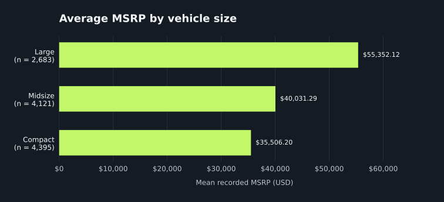
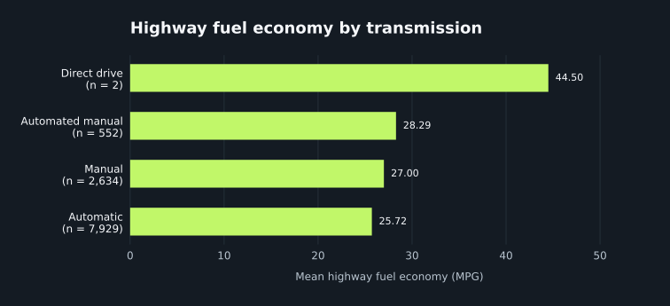

vehicles
One row per cleaned record. source_row_id is the primary key. The table retains 35 columns, with transmission_id replacing the original transmission text.
Eight executed SQL queries explore vehicle prices, performance, and fuel economy. Two query results become visual comparisons.
Carson Davis · SQL Data Analysis
I imported the cleaned CSV from Assignment 3 into SQLite. Each row represents a vehicle specification record, not an individual sale or a unique physical vehicle. I preserved all 11,199 records and the original source-row identifiers.
Text fields use TEXT, whole-number fields use INTEGER, and log10_msrp uses REAL. Empty CSV fields become SQL NULL, and True/False flags become 1/0. These are storage conversions, not additional cleaning or imputation.
One row per cleaned record. source_row_id is the primary key. The table retains 35 columns, with transmission_id replacing the original transmission text.
A lookup with four distinct transmission names from the same cleaned dataset. transmission_id is its primary key and a foreign key in vehicles. Each transmission category relates to many vehicle records.
This lookup demonstrates a real relational join without introducing an unrelated external dataset. Twelve records with missing transmission retain NULL foreign keys. Query 8 uses an INNER JOIN, so those records are excluded. Foreign-key and database-integrity checks passed; a LEFT JOIN preserves the full 11,199-row count.
PRAGMA foreign_keys = ON;
CREATE TABLE transmissions (
transmission_id INTEGER PRIMARY KEY,
transmission_name TEXT NOT NULL UNIQUE
);
CREATE TABLE vehicles (
source_row_id INTEGER PRIMARY KEY,
make TEXT,
model TEXT,
year INTEGER,
fuel_type TEXT,
engine_hp INTEGER,
engine_cylinders INTEGER,
transmission_id INTEGER REFERENCES transmissions(transmission_id),
driven_wheels TEXT,
doors INTEGER,
market_category TEXT,
vehicle_size TEXT,
vehicle_style TEXT,
highway_mpg INTEGER,
city_mpg INTEGER,
popularity INTEGER,
msrp INTEGER,
highway_mpg_review_flag INTEGER,
electric_efficiency_review_flag INTEGER,
msrp_floor_review_flag INTEGER,
fuel_type_missing INTEGER,
engine_hp_missing INTEGER,
engine_cylinders_missing INTEGER,
doors_missing INTEGER,
market_category_missing INTEGER,
transmission_missing INTEGER,
highway_mpg_missing INTEGER,
msrp_iqr_outlier INTEGER,
engine_hp_iqr_outlier INTEGER,
engine_cylinders_iqr_outlier INTEGER,
city_mpg_iqr_outlier INTEGER,
highway_mpg_iqr_outlier INTEGER,
log10_msrp REAL,
core_analysis_ready INTEGER,
fuel_economy_analysis_ready INTEGER
);
Queries 1, 2, 4, and 5 establish the data context by inspecting records, filtering model years, reviewing high prices, and measuring coverage. These descriptive results support later research; they do not test causation or estimate the independent effect of a feature on price.
Every table below contains the actual output of its displayed query. Queries 1–4 deliberately return ten records. Queries 5–8 show their entire results. NULL means missing, not zero. The CSV downloads retain machine-readable numbers.
Inspect ten vehicle records and the fields used in the price analysis.
SELECT source_row_id, make, model, year, engine_hp, msrp
FROM vehicles
ORDER BY source_row_id
LIMIT 10;| source_row_id | make | model | year | engine_hp | msrp |
|---|---|---|---|---|---|
| 1 | BMW | 1 Series M | 2011 | 335 | 46135 |
| 2 | BMW | 1 Series | 2011 | 300 | 40650 |
| 3 | BMW | 1 Series | 2011 | 300 | 36350 |
| 4 | BMW | 1 Series | 2011 | 230 | 29450 |
| 5 | BMW | 1 Series | 2011 | 230 | 34500 |
| 6 | BMW | 1 Series | 2012 | 230 | 31200 |
| 7 | BMW | 1 Series | 2012 | 300 | 44100 |
| 8 | BMW | 1 Series | 2012 | 300 | 39300 |
| 9 | BMW | 1 Series | 2012 | 230 | 36900 |
| 10 | BMW | 1 Series | 2013 | 230 | 37200 |
10 result row(s) · Download Query 1 result CSV
Find a reproducible example of newer model-year records. The ten displayed rows are a sample, not all matches.
SELECT source_row_id, make, model, year, msrp
FROM vehicles
WHERE year >= 2015
ORDER BY source_row_id
LIMIT 10;| source_row_id | make | model | year | msrp |
|---|---|---|---|---|
| 33 | FIAT | 124 Spider | 2017 | 27495 |
| 34 | FIAT | 124 Spider | 2017 | 24995 |
| 35 | FIAT | 124 Spider | 2017 | 28195 |
| 42 | BMW | 2 Series | 2016 | 32850 |
| 43 | BMW | 2 Series | 2016 | 38650 |
| 44 | BMW | 2 Series | 2016 | 48750 |
| 45 | BMW | 2 Series | 2016 | 34850 |
| 46 | BMW | 2 Series | 2016 | 40650 |
| 47 | BMW | 2 Series | 2016 | 44150 |
| 48 | BMW | 2 Series | 2016 | 32850 |
10 result row(s) · Download Query 2 result CSV
Find recent-model-year records combining at least 300 horsepower with a recorded MSRP below $40,000.
SELECT source_row_id, make, model, year, engine_hp, msrp
FROM vehicles
WHERE year >= 2015 AND engine_hp >= 300 AND msrp < 40000
ORDER BY msrp ASC, source_row_id ASC
LIMIT 10;| source_row_id | make | model | year | engine_hp | msrp |
|---|---|---|---|---|---|
| 2181 | Chevrolet | Camaro | 2015 | 323 | 23705 |
| 7077 | Ford | Mustang | 2015 | 300 | 23800 |
| 7082 | Ford | Mustang | 2016 | 300 | 24145 |
| 7089 | Ford | Mustang | 2017 | 300 | 24645 |
| 2182 | Chevrolet | Camaro | 2015 | 323 | 25145 |
| 7074 | Ford | Mustang | 2015 | 310 | 25300 |
| 7087 | Ford | Mustang | 2016 | 310 | 25645 |
| 7088 | Ford | Mustang | 2017 | 310 | 25645 |
| 5819 | Chevrolet | Impala Limited | 2015 | 300 | 25830 |
| 5823 | Chevrolet | Impala Limited | 2016 | 300 | 25830 |
10 result row(s) · Download Query 3 result CSV
Identify the ten highest recorded prices for inspection. High prices remain in the data.
SELECT source_row_id, make, model, year, engine_hp, msrp
FROM vehicles
WHERE msrp IS NOT NULL
ORDER BY msrp DESC, source_row_id ASC
LIMIT 10;| source_row_id | make | model | year | engine_hp | msrp |
|---|---|---|---|---|---|
| 11363 | Bugatti | Veyron 16.4 | 2008 | 1001 | 2065902 |
| 11365 | Bugatti | Veyron 16.4 | 2009 | 1001 | 1705769 |
| 8487 | Lamborghini | Reventon | 2008 | 650 | 1500000 |
| 11364 | Bugatti | Veyron 16.4 | 2008 | 1001 | 1500000 |
| 6352 | Maybach | Landaulet | 2012 | 620 | 1382750 |
| 6351 | Maybach | Landaulet | 2011 | 620 | 1380000 |
| 4025 | Ferrari | Enzo | 2003 | 660 | 643330 |
| 1623 | Lamborghini | Aventador | 2014 | 720 | 548800 |
| 1627 | Lamborghini | Aventador | 2015 | 720 | 548800 |
| 1630 | Lamborghini | Aventador | 2016 | 750 | 535500 |
10 result row(s) · Download Query 4 result CSV
Summarize dataset coverage and available-case averages. COUNT(column) shows each numeric denominator.
SELECT COUNT(*) AS records,
MIN(year) AS earliest_year, MAX(year) AS latest_year,
COUNT(msrp) AS price_records,
ROUND(AVG(msrp), 2) AS avg_msrp,
COUNT(engine_hp) AS hp_records,
ROUND(AVG(engine_hp), 2) AS avg_hp
FROM vehicles;| records | earliest_year | latest_year | price_records | avg_msrp | hp_records | avg_hp |
|---|---|---|---|---|---|---|
| 11199 | 1990 | 2017 | 11199 | 41,925.93 | 11130 | 253.39 |
1 result row(s) · Download Query 5 result CSV
Compare average recorded MSRP across vehicle sizes. This result supplies Visualization 1.
SELECT vehicle_size, COUNT(*) AS records,
ROUND(AVG(msrp), 2) AS avg_msrp
FROM vehicles
WHERE vehicle_size IS NOT NULL AND msrp IS NOT NULL
GROUP BY vehicle_size
ORDER BY avg_msrp DESC, vehicle_size ASC;| vehicle_size | records | avg_msrp |
|---|---|---|
| large | 2683 | 55,352.12 |
| midsize | 4121 | 40,031.29 |
| compact | 4395 | 35,506.20 |
3 result row(s) · Download Query 6 result CSV
Compare every brand with at least 100 priced records. The threshold avoids the smallest groups but does not guarantee statistical reliability.
SELECT make, COUNT(*) AS records,
ROUND(AVG(msrp), 2) AS avg_msrp
FROM vehicles
WHERE make IS NOT NULL AND msrp IS NOT NULL
GROUP BY make
HAVING COUNT(*) >= 100
ORDER BY avg_msrp DESC, make ASC;| make | records | avg_msrp |
|---|---|---|
| Porsche | 136 | 101,622.40 |
| Mercedes-Benz | 341 | 72,069.53 |
| Land Rover | 139 | 68,067.09 |
| BMW | 324 | 62,162.56 |
| Cadillac | 396 | 56,368.27 |
| Audi | 321 | 54,574.12 |
| Lexus | 202 | 47,549.07 |
| Lincoln | 160 | 43,860.82 |
| Infiniti | 328 | 42,640.27 |
| Acura | 246 | 35,087.49 |
| GMC | 482 | 32,444.09 |
| Volvo | 266 | 29,724.68 |
| Chevrolet | 1083 | 29,074.73 |
| Buick | 190 | 29,034.19 |
| Volkswagen | 568 | 28,978.52 |
| Nissan | 551 | 28,921.15 |
| Toyota | 719 | 28,846.56 |
| Ford | 825 | 28,511.31 |
| Saab | 109 | 27,879.81 |
| Chrysler | 187 | 26,722.96 |
| Honda | 433 | 26,655.15 |
| Kia | 229 | 25,513.76 |
| Hyundai | 259 | 24,926.26 |
| Dodge | 529 | 24,857.05 |
| Subaru | 239 | 24,240.67 |
| Mitsubishi | 208 | 21,340.56 |
| Mazda | 412 | 20,416.62 |
| Pontiac | 181 | 19,800.04 |
| Suzuki | 342 | 18,026.42 |
| Oldsmobile | 132 | 12,843.80 |
30 result row(s) · Download Query 7 result CSV
Join vehicle records to a transmission lookup, then compare average highway MPG in the eligible fuel-economy subset. This result supplies Visualization 2.
SELECT t.transmission_name, COUNT(*) AS records,
ROUND(AVG(v.highway_mpg), 2) AS avg_highway_mpg
FROM vehicles AS v
JOIN transmissions AS t ON v.transmission_id = t.transmission_id
WHERE v.fuel_economy_analysis_ready = 1
GROUP BY t.transmission_id, t.transmission_name
ORDER BY avg_highway_mpg DESC, t.transmission_name ASC;| transmission_name | records | avg_highway_mpg |
|---|---|---|
| direct drive | 2 | 44.50 |
| automated manual | 552 | 28.29 |
| manual | 2634 | 27.00 |
| automatic | 7929 | 25.72 |
4 result row(s) · Download Query 8 result CSV
The charts use the exported rows from Queries 6 and 8 without further filtering. Bar lengths show the query averages; n is the number of records contributing to each bar. Both numeric axes begin at zero, and exact results are available in the tables above.

Large vehicles have the highest average recorded MSRP in this dataset, $55,352.12, compared with $35,506.20 for compact vehicles. This is a descriptive difference of $19,845.92. Brand, model year, horsepower, and expensive outliers could also influence these averages, so vehicle size alone does not explain the price gap.

The direct-drive average is 44.50 MPG, but it represents only two eligible records. Automated manual averages 28.29 MPG across 552 records, manual averages 27.00 across 2,634, and automatic averages 25.72 across 7,929. These categories differ in vehicle mix; the chart does not show that changing a transmission would change MPG by the observed amount.
Fuel-economy eligibility requires a known non-electric fuel type and nonmissing city and highway values. The inherited Assignment 3 flag excludes electric records with unresolved unit comparability and the quarantined highway value. Query 8 additionally excludes missing transmissions. Its final sample contains 11,117 records.
SQL gives my research a reproducible way to select, compare, and summarize vehicle records. WHERE applies the same inclusion rules to every record. GROUP BY calculates results for each vehicle category, while HAVING filters groups after aggregation. JOIN connects each vehicle to its transmission label through a documented key. ORDER BY makes ranked comparisons easy to inspect.
The queries turn broad research questions into measurable comparisons. Query 6 supports the vehicle-size and price question, Query 7 supports the brand and price question, and Query 8 supports the transmission and fuel-efficiency question. Query 3 identifies records meeting specific performance and price criteria. Their saved SQL and CSV outputs make the results traceable and repeatable.
The dataset covers model years 1990–2017 and is not a representative sample of current sales. MSRP is the source's recorded dollar-denominated price, not a verified current transaction price, and is not inflation-adjusted. Retained price-floor values and outliers can affect means. Missing values produce different analysis subsets. Unequal group sizes and unadjusted brand, year, and vehicle-type differences prevent causal conclusions. The 100-record threshold in Query 7 is an exploratory reporting rule, not a significance test.
python build_assignment4.py (or python3 build_assignment4.py).The rebuild script recreates database and result files, not the static HTML or chart images. The published charts correspond to the supplied source and saved Query 6 and Query 8 results.
Source CSV SHA-256:
e7f3812484b4444be6d905846774524dab7c28cbeb22a6a0140f967b60b2644c
Cooper Union. Car Features and MSRP. Kaggle. This analysis uses the cleaned version documented in Assignment 3. See Assignment 2 for the dataset investigation.